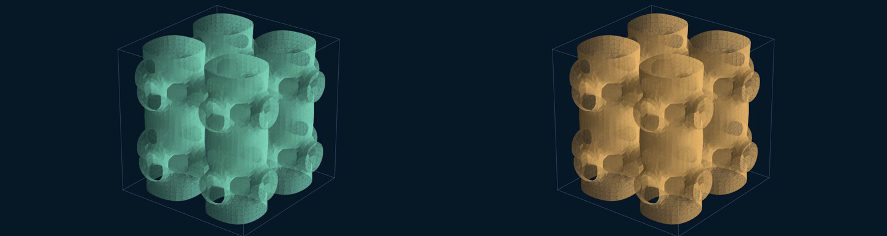

Evidence, in motion · local and offline
What changed?
What did the checks see?
Cristian Guerra · QA Automation · Medellín, Colombia · @criguex
Ten supporting animation scenes turn recorded evidence into comparisons. Choose a scene, play or scrub its embedded HTML, then download the standalone file. The standalone HTML embeds its data and renderer; it does not fetch remote code.
RC circuitR=1000 Ω; C=0.001 F; τ=1 s. At 3 s: 4.751 V baseline vs 3.884 V with doubled τ.
Second-order chemistryA₀=1.2 mol/L; k=0.4 L/(mol·s). At the 4.17 s horizon: 0.400 vs 0.240 mol/L after doubling k. Liquid volume stays fixed.
Newton coolingT₀=90°C; ambient=20°C. At 15 s: 23.49°C baseline vs 35.62°C after halving k. Invariant ok holds, but error 0.249 exceeds 1e-06.
Snell refractionn₁=1; n₂=1.5. At θ₁=0.4 rad, recorded θ₂ is 0.263 rad baseline vs 0.624 rad for the index swap. Angles are measured from the normal.
C/D revalidation18/18 checks recorded, 0 unexpected, 1 not run because of a toolchain mismatch. 6 statement mutants KILLED by Comparator. State: complete.
Paired campaign84 per host: 27 PASS · 54 KILLED · 3 SURVIVED. Same variants on both hosts, not 168 distinct cases.
RC circuit mutation
Cristian Guerra · QA Automation · Medellín, Colombia · @criguex
A separate 3D flow visualization
This Taylor–Green visualization is only visual context. It is not the 84-variant campaign, evidence of blow-up, or a formal solution. No synthetic physics scene is generated here.

Input evidence and SHA-256 provenance
{
"rc_baseline": {
"path": "evidence/numerical/fixtures/rc-baseline.json",
"sha256": "57a7df125bca23ebe94c6de859961c69e8373e65f08a429ffc71e85918cfc7d4"
},
"rc_mutation": {
"path": "evidence/numerical/fixtures/rc-tau-double.json",
"sha256": "9ffa207d1a80d0410cac884d6f9ff8fe8bcf1989fb3527826ce45187694260ef"
},
"chemistry_baseline": {
"path": "evidence/numerical/paired/macos-arm64/case_022.json",
"sha256": "ade5e557e71f807d386b20bbb5572a66de9be0e537fb4bcb8def7384dfd661df"
},
"chemistry_mutation": {
"path": "evidence/numerical/paired/macos-arm64/case_024.json",
"sha256": "d84d75a5b0d46b025f08a0c129f95e7a9fd40610bb70c3fcbb590569f35bba5a"
},
"campaign": {
"path": "evidence/numerical/multidomain_derived.json",
"sha256": "b56bc9af121905fb1c962322a4b0c23fc5a8f4dd0b00601a5edf662d21cc5a50"
},
"formal_derived": {
"path": "evidence/formal/kernel-mutation/derived-classification.json",
"sha256": "33cf64988ce0d31d9b35d2ddc6491e58f53aeb6d59a37116eb339e847533f30a"
},
"formal_fixture": {
"path": "evidence/formal/fixtures/KernelFixture.lean",
"sha256": "10839136a8412011f617d4e57924a159cd58a680020cb3c5774c63c748923c27"
},
"cooling_baseline": {
"path": "evidence/numerical/paired/macos-arm64/case_013.json",
"sha256": "596b069b45e1ffd30dcd13778d36b0199cd43e40b1d2db91351bd1707e4c6778"
},
"cooling_mutation": {
"path": "evidence/numerical/paired/macos-arm64/case_015.json",
"sha256": "fdbb9ef4f76b8bb7b09c82c52e098b2059a96704177dffff44cb20d056da9541"
},
"snell_baseline": {
"path": "evidence/numerical/paired/macos-arm64/case_040.json",
"sha256": "4927dcb99ab0c98d256aa3571b1b47c124d0ed1d8b2412cfed483290697e8095"
},
"snell_mutation": {
"path": "evidence/numerical/paired/macos-arm64/case_041.json",
"sha256": "4ae5cd9f4114a196744569ccf371986ea822ca443fd72cbf7f14a2d0b992f45d"
},
"suite_contract": {
"path": "evidence/numerical/source/suite.py",
"sha256": "4213c8ed582a7ac9c716537ab716833bdfcdd6bf18322a00dbd4282240a4482d"
},
"cd_validation": {
"path": "evidence/formal/cd-validation/results.json",
"sha256": "f1c25c095f657826bde8d70f20f112d43f067d83c056b944c0d0b8798fb868c5"
},
"comparator_run1": {
"path": "evidence/formal/comparator/README.md",
"sha256": "95e0b8d8f4de4a4bc84e0235b88230b3fb506f59d8b05bb3c1013b108ce76132"
},
"statement_provenance": {
"path": "evidence/formal/statement-provenance/result.json",
"sha256": "d9b120cbec3cc1e3a2680cade1f0f6fcf9dc27419ed336fac09eb89ed59fb084"
},
"clay_risk": {
"path": "evidence/formal/clay-lean-risk.md",
"sha256": "a47cd334e8169587bd4de3cefd2215ec875263b8312ed23fdbff0a52021d6567"
}
}